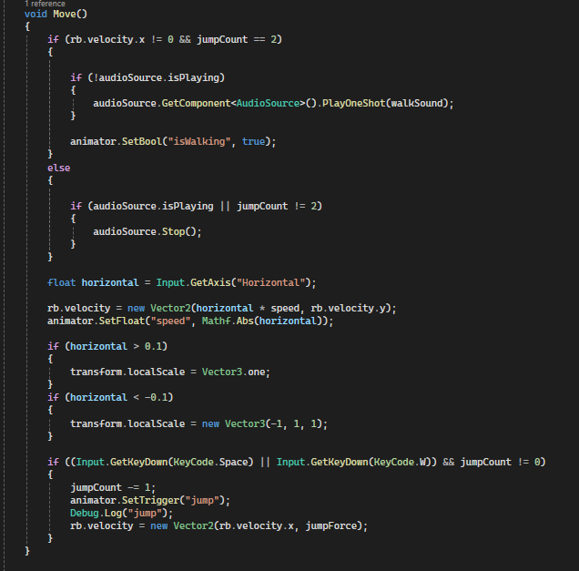
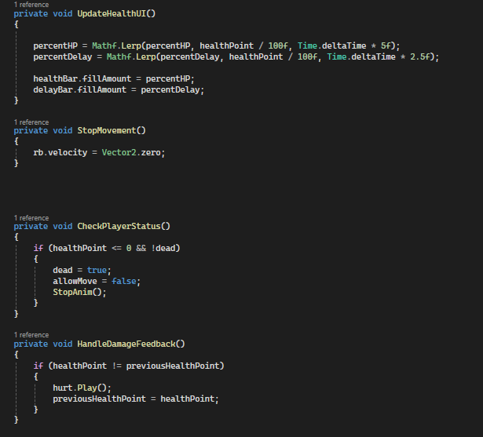

Alone
Game in class
Dev by: Kanchaphum Thinthachana , Teerapuwanai Chanachaisombud
Alone Game Machanic

Features
Class PlayerController
This class handles the player’s movement, jumping, health, animations, sounds, and enemy detection. It serves as the foundation for more advanced features like state machines and environmental interaction

Function Move
I structured the player movement logic into a separate function for modularity, making it easy to call and maintain. This approach also simplifies debugging, allows smooth integration of animations and input handling, and ensures scalability for future features.

I implemented a set of player control functions to handle different gameplay scenarios.
StopAnim() stops all player animations, plays the death sound, triggers the game over UI, and pauses the game when the player dies.
RestartGame() activates the restart interface, allowing the player to retry.
DetectEnemyAndPlayHeartbeat() continuously checks for nearby enemies and plays a heartbeat audio cue when any are within detection range, enhancing tension and player feedback.
This modular approach keeps the gameplay logic organized, makes it easier to debug, and allows each component to be reused or adjusted independently.

I implemented collision and trigger detection for player interactions:
OnCollisionEnter2D() resets the player's jump count when touching the ground, enabling double jumps.
OnTriggerEnter2D() handles level progression and quest interactions: entering a "win" trigger loads the victory scene, and collecting a "key" with the correct color completes a quest and updates the key's visual state.
This modular approach keeps the gameplay logic organized, makes it easier to debug, and allows each component to be reused or adjusted independently.

To make player character management clear, maintainable, and scalable, I separated key functionality into small, focused modular functions. This design improves readability, simplifies debugging, and reduces the risk of errors when making changes.
UpdateHealthUI() Updates the health UI in real time using Lerp to create smooth, natural transitions for the health and delayed health bars.
StopMovement() Instantly stops the player’s movement, used when the player dies or is temporarily immobilized.
CheckPlayerStatus() Monitors the player’s state, including death or movement restrictions, and triggers animations and events as needed.
HandleDamageFeedback() Provides immediate audio feedback when the player takes damage, enhancing player awareness of their status.
By structuring functions this way, the player’s Update() method becomes organized and easy to extend for future features, such as power-ups, abilities, or new gameplay mechanics.

In the PlayerControl class, all core functionality is modularized into dedicated methods for clarity and maintainability. The Update() method then serves as a single, readable flow that calls these methods in a logical order, making the class easier to read, debug, and extend.

Enemy AI – Movement & Attack System
This enemy class is structured to provide clear behavior and maintainable code by separating responsibilities into key functions:
Patrol()
The enemy moves back and forth between the start position and a defined patrol distance.
When reaching the boundary, Flip() is called to reverse direction.
Movement is handled via Rigidbody2D, and walking animation (isWalking) is updated in the Animator.
FollowPlayer()
The enemy moves toward the player’s position on the X-axis.
If facing the wrong direction, Flip() adjusts the sprite orientation.
Walking animation is kept active during movement.
StopAndAttackPlayer() & AttackPlayer()
When within attack range, the enemy stops moving (rb.velocity = 0) and triggers the attack animation (atk) with a sound effect.
AttackPlayer() coroutine adds a delay before applying damage.
If the player is in range, health is reduced and the corresponding player animation (hurt or dead) is triggered.
Flip()
Toggles the movingRight boolean.
Adjusts the sprite’s localScale to face the correct direction.
By structuring functions this way, the player’s Update() method becomes organized and easy to extend for future features, such as power-ups, abilities, or new gameplay mechanics.

Enemy AI Design & Rationale
The enemy is designed for clarity, realism, and easy maintenance
Stable Initialization References to Player, Animator, and Rigidbody2D are set in Start() with null checks to prevent errors.
Distance-Based Behavior Switches dynamically between patrolling, chasing, and attacking based on player distance.
Attack Timing Uses attackDelay to add realistic intervals between attacks.
Clean & Flexible Code Clear function separation allows easy adjustments or new behaviors.

Enemy Spawner Design & Rationale
This script handles dynamic enemy spawning with control over timing, quantity, and locationbr>
Trigger-Based Activation – Spawning starts only when the player enters the trigger, ensuring events are context-sensitive.
Controlled Spawn Rate – spawnDelay prevents all enemies from appearing at once, improving gameplay pacing.
Randomized Positioning – Slight horizontal variation makes encounters less predictable and more engaging.
Single Execution Safety – hasTriggered ensures the spawner runs only once per activation to avoid unintended duplication.
Designed for flexibility, performance, and engaging gameplay, with easily adjustable parameters for enemy quantity, spawn delay, and positions.

Quest System Overview
This Quest class manages interactive quest dialogues and player progression in the game. It ensures a smooth and engaging gameplay experience by controlling when the player can interact, displaying text with a typewriter effect, and tracking quest completion.
Key Features
Interactive Quest UI The UI toggles when the player is in range and presses E, disabling player movement to focus attention on the quest dialogue.
Dynamic Text Display Quest texts appear character by character using a coroutine (TypeText), enhanced with typing sounds for immersion.
Quest Progression Tracks multiple quests with currentQuestIndex and questCompleted arrays, ensuring proper sequence and preventing repeated completion.
Player Trigger Detection Uses OnTriggerEnter2D and OnTriggerExit2D to detect when the player approaches or leaves the quest area, automatically enabling or disabling interaction prompts.
Why this structure
Separating UI toggle, text typing, and quest completion improves readability and maintainability
Using coroutines for typewriting ensures smooth text animation without blocking the main game loop
Player movement is properly locked during dialogue to prevent accidental interruptions.


RandomKey
RandomKey handles randomly assigning positions and sprites (keys) for quest objects, ensuring variety while preventing duplicates. It tracks which positions have already been used and maintains consistency for unfinished quests.
Key Features
Stores positions & sprites
password[] is randomly initialized in Start() to give each key a unique appearance
Initial random setup
positions: possible key locations
keys: key sprites
Random assignment (randomKey)
Returns an available position index and updates the child’s position and sprite for quest i
If the quest is ongoing and matches the last one, it reuses the previous position to keep consistency
Ensures new positions are not reused via usedPositionIndices
Avoids duplication
Prevents overlapping positions until all have been used
Logs a warning if no positions are lef
Sprite & collider adjustment
Automatically updates the sprite and collider size to match the assigned key
Why this structure
Maintains position consistency for unfinished quests
Prevents duplicate positions for different keys
Keeps code modular and easy to maintain
Provides developer feedback when positions run out